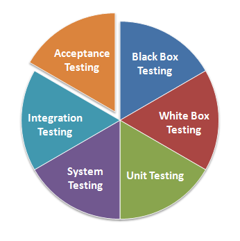

Software testing is an investigation conducted to provide stakeholders with information about the quality of the product or service under test.

Unit testing is a software testing method by which individual units of source code, sets of one or more computer program modules together with associated control data, usage procedures, and operating procedures, are tested to determine whether they are fit for use
Acceptance testing is a formal testing with respect to user needs, requirements, and business processes conducted to determine whether a system satisfies the acceptance criteria and to enable the user, customers or other authorized entity to determine whether or not to accept the system
Integration testing is the phase in software testing in which individual software modules are combined and tested as a group
System testing of software or hardware is testing conducted on a complete, integrated system to evaluate the system's compliance with its specified requirements
White-box testing is a method of testing software that tests internal structures or workings of an application, as opposed to its functionality
Black-box testing is a method of software testing that examines the functionality of an application without peering into its internal structures or workings
Software development process
Test-driven development (TDD) is a software development process that relies on the repetition of a very short development cycle: first the developer writes an (initially failing) automated test case that defines a desired improvement or new function, then produces the minimum amount of code to pass that test, and finally refactors the new code to acceptable standards
Software development process
Behavior-driven development (BDD) combines the general techniques and principles of TDD with ideas from domain-driven design and object-oriented analysis and design to provide software development and management teams with shared tools and a shared process to collaborate on software development